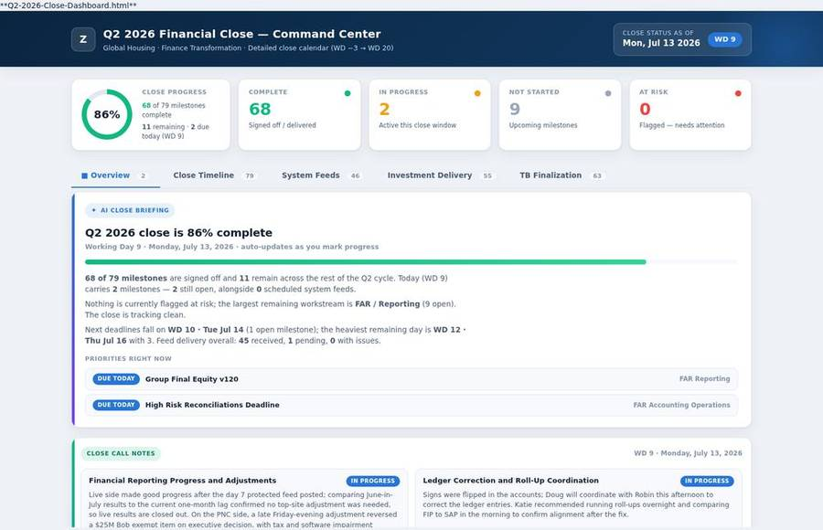

Actual dashboard · anonymizedBuilt at Zurich North America
The close,
in one view.
Where do we stand, and what needs attention?
A shared view of reporting milestones, dependencies, and sign-off. Built to make progress visible and focus review on the exceptions.
Explore the close dashboard